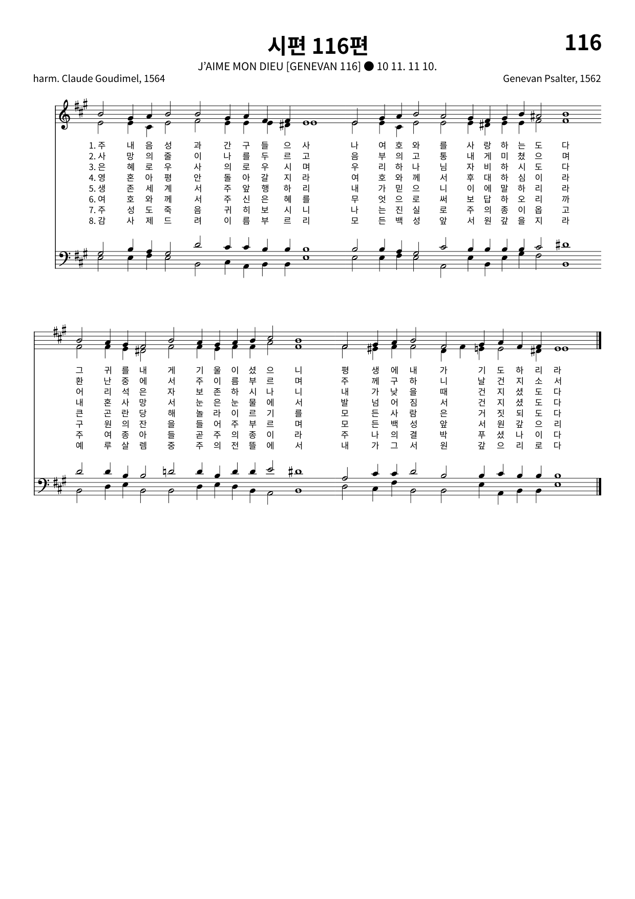

Psalm 116
J’AIME MON DIEU [GENEVAN 116] · 10 11. 11 10.
English title: I Love the LORD, the Fount of Life
Tune: Genevan Psalter, 1562 · Harmony: Claude Goudimel, 1564 · Lyrics: Korean adaptation of Psalm 116 from the Korean Revised Version (AI draft adaptation · not yet theologically reviewed) · 8 stanzas
Score PDF MusicXML (for printing) MusicXML (for accompaniment, with prelude and repeats) Read Psalm 116 (Korean Revised Version)
Score
← Psalm 115 ListAccompaniment (in preparation)Psalm 117 →
Lyrics (Korean)
Stanza 1
주 내 음성과 간구 들으사
나 여호와를 사랑하는도다
그 귀를 내게 기울이셨으니
평생에 내가 기도하리라
주 내 음성과 간구 들으사
나 여호와를 사랑하는도다
그 귀를 내게 기울이셨으니
평생에 내가 기도하리라
Stanza 2
사망의 줄이 나를 두르고
음부의 고통 내게 미쳤으며
환난 중에서 주 이름 부르며
주께 구하니 날 건지소서
사망의 줄이 나를 두르고
음부의 고통 내게 미쳤으며
환난 중에서 주 이름 부르며
주께 구하니 날 건지소서
Stanza 3
은혜로우사 의로우시며
우리 하나님 자비하시도다
어리석은 자 보존하시나니
내가 낮을 때 건지셨도다
은혜로우사 의로우시며
우리 하나님 자비하시도다
어리석은 자 보존하시나니
내가 낮을 때 건지셨도다
Stanza 4
영혼아 평안 돌아갈지라
여호와께서 후대하심이라
내 혼 사망서 눈은 눈물에서
발 넘어짐서 건지셨도다
영혼아 평안 돌아갈지라
여호와께서 후대하심이라
내 혼 사망서 눈은 눈물에서
발 넘어짐서 건지셨도다
Stanza 5
생존 세계서 주 앞 행하리
내가 믿으니 이에 말하리라
큰 곤란 당해 놀라 이르기를
모든 사람은 거짓되도다
생존 세계서 주 앞 행하리
내가 믿으니 이에 말하리라
큰 곤란 당해 놀라 이르기를
모든 사람은 거짓되도다
Stanza 6
여호와께서 주신 은혜를
무엇으로써 보답하오리까
구원의 잔을 들어 주 부르며
모든 백성 앞 서원 갚으리
여호와께서 주신 은혜를
무엇으로써 보답하오리까
구원의 잔을 들어 주 부르며
모든 백성 앞 서원 갚으리
Stanza 7
주 성도 죽음 귀히 보시니
나는 진실로 주의 종이옵고
주 여종 아들 곧 주의 종이라
주 나의 결박 푸셨나이다
주 성도 죽음 귀히 보시니
나는 진실로 주의 종이옵고
주 여종 아들 곧 주의 종이라
주 나의 결박 푸셨나이다
Stanza 8
감사제 드려 이름 부르리
모든 백성 앞 서원 갚을지라
예루살렘 중 주의 전 뜰에서
내가 그 서원 갚으리로다
감사제 드려 이름 부르리
모든 백성 앞 서원 갚을지라
예루살렘 중 주의 전 뜰에서
내가 그 서원 갚으리로다